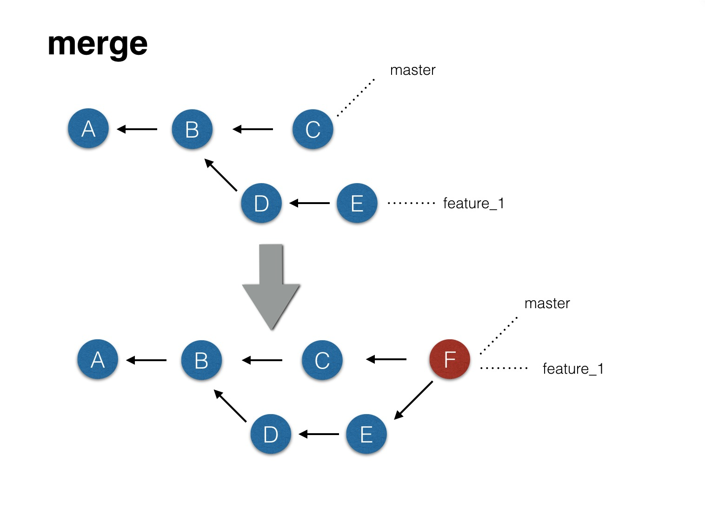
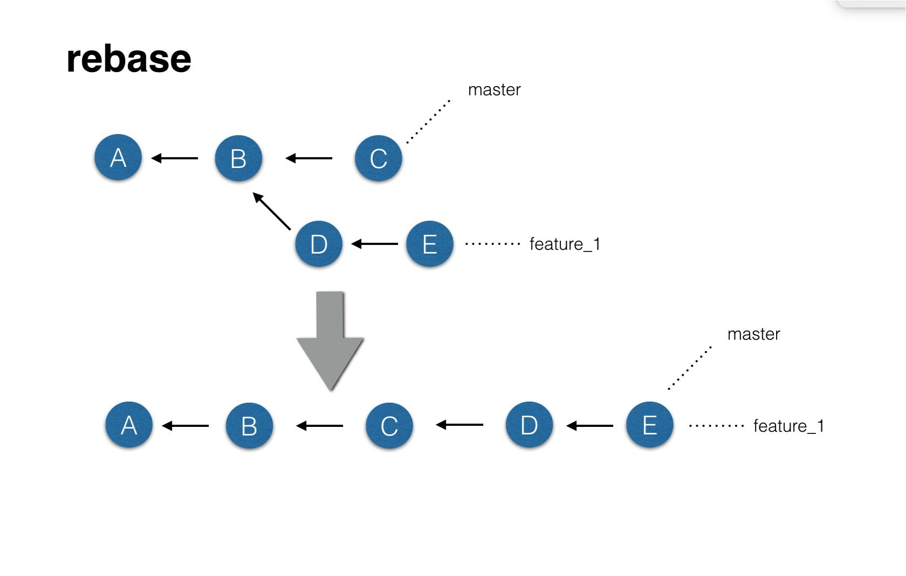
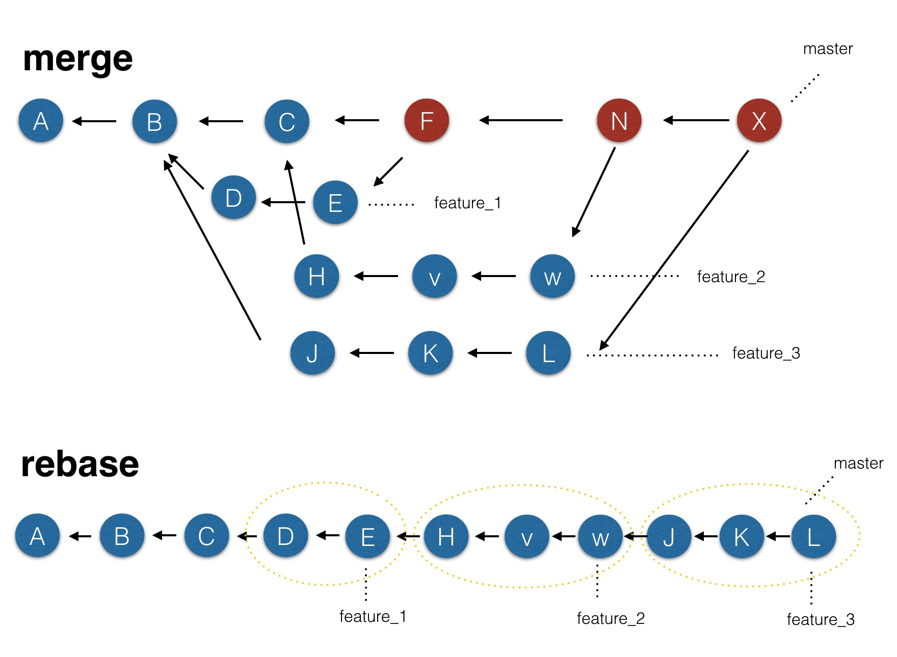

背景
如果用一句话来描述 git rebase 和 git merge的最大区别，那就是：
两种合并所产生的log不一样。


小结
从上图中看，rebase与merge的区别有些体现了，即它们产生的log tree不一样。我们放大这种效果再看
merge vs rebase

总结
我们的分支模型最简单实用的，无外乎分支开发主干合并。每当我们需要开发一个新特性时，就会创建一个特性分支。
当使用
merge时，最后合产生的log随着特性分支的增多，log tree显得非常凌乱（其实也不凌乱，只是对比rebase模式而言）。当使用
rebase时，最后产生的log tree会成一条线，而依然能够清晰看出特性分支，图中黄色圈起来的地方。这是与merge的最大区别。当然还有其它的不同
a. 比如
merge合并时会产生一个多余的节点（有些人认为这个节点没有任何意义，其实这代表了合并，怎么会没有意义呢？） 。b. 再比如
rebase在合并冲突时，可能没有merge好用（rebase会根据时间来diff，比如master 改了文件1某个地方，commit了，dev 改了文件1同一处，commit了，dev 又改了文件1同一处， commit了。此时期望的是dev最后1次commit的与master commit的 diff就行了，但是rebase还得diff多次。rebase 最好不用于公共分支等我们就不讨论了。rebase与merge的具体实战操作并不难，就不作演示了。
参考
https://www.youtube.com/watch?v=a_msiOrYLgM
https://www.atlassian.com/git/tutorials/merging-vs-rebasing
https://www.youtube.com/watch?v=SxzjZtJwOgo
https://blog.yorkxin.org/2011/07/29/git-rebase